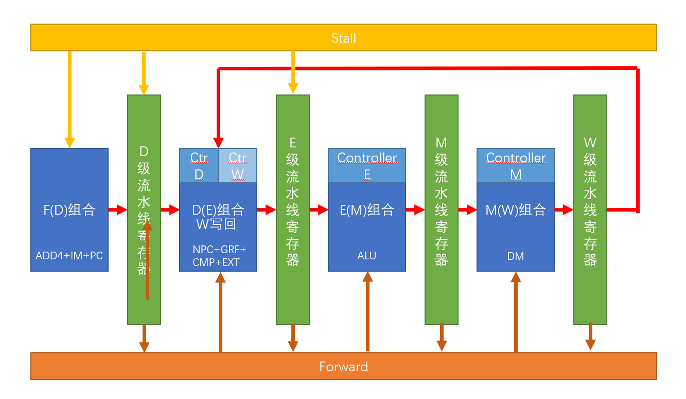
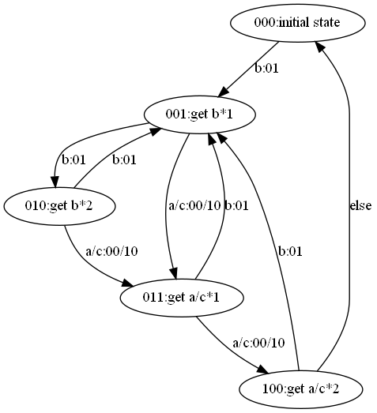
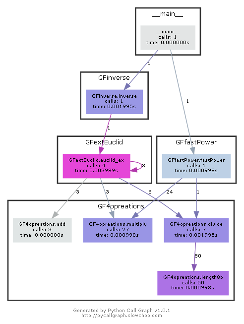
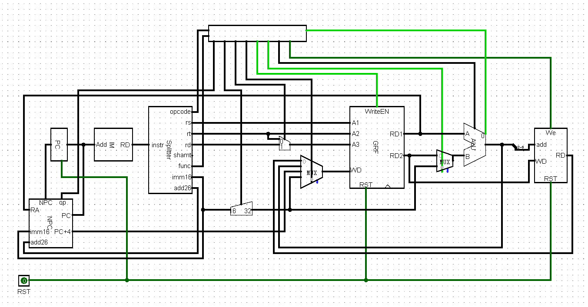

籍由这篇博客，简单总结上学期计算机组成原理课设。
计组课设一共有P0~P7七个阶段，P0~P2分别是对Logisim、Verilog和MIPS的预习内容，P3用Logisim实现单周期CPU，P4用Verilog实现单周期CPU，P5用Verilog实现流水线CPU，P6将指令集增加到四十余条，P7加入中断和异常。我做到P6，而博客只写到P3。后续~P6 Verilog部分的CPU设计、搭建过程，与工程化建模过程全部用excel记录，不放在这里了。
P6的实现指令集：
- LB、LBU、LH、LHU、LW、SB、SH、SW
- ADD、ADDU、 SUB、 SUBU
- MULT、 MULTU
- DIV、 DIVU
- SLL、 SRL、 SRA、 SLLV、 SRLV、SRAV
- AND、OR、XOR、NOR、ADDI、ADDIU、ANDI、ORI、 XORI、LUI
- SLT、SLTI、SLTIU、SLTU
- BEQ、BNE、BLEZ、BGTZ、 BLTZ、BGEZ、J、JAL、JALR、JR
- MFHI、MFLO、MTHI、MTLO
流水线CPU的设计思路：

课设对于查重的要求很高，故而大家都按照自己的思路进行设计。有趣的是，我和室友在完成P5的初步搭建后尝试阅读对方的代码，发现思路大相径庭——虽然我们都是完全按照高小鹏老师的PPT搭建的，但我们却几乎看不懂对方在些什么。主要的差异有：B型指令的判断、对于不同模块的打包、转发、暂停等。给出两个例子：
- 按单元纵向打包 & 按功能横向打包
- 我的顶层结构可看作纵向打包——分为FDEMW五阶段、五阶段相应的控制单元，和四个流水线寄存器，另附有转发控制和暂停控制两模块，共16个模块
- 室友采用横向打包——所有的7个控制单元组成总控，所有的组合逻辑和流水线寄存器组成流水线总体。
- 分布式控制和集中式控制
- 我的流水线的流水信号采用极简模式：只流水相当有限的几个信号，例如指令instruction信号，在每个单元的控制部分单独判断是什么指令，采用什么控制。好处在于，单元间的耦合低，可看作独立模块（符合我纵向按照单元打包的思想）。
- 室友的流水线只在最开始的地方判断一次，然后把所有控制信号向下流水。好处在于，大大减少指令类别判断，减少代码量（符合她横向按照功能打包的思想）。
P1_Verilog部件设计与有限状态机
前言：P1主题是Verilog。考察重点在于有限状态机，而有限状态机的搭建难点主要在于状态的设计。
Verilog作为一门新的语言，与c多有不同，但在掌握好基础语法以后一切创新与灵机一动都变得不再天方夜谭了。并行，正是最重要的特性。刚刚开始Verilog学习时曾一头雾水，到处搜寻网上所谓的“教程”，最后才恍然——教材才是最佳宝典呀。
知识总结：
组合逻辑建模：
建模组合逻辑时，可以采用如下两种方式：
- always块配合reg型变量与阻塞赋值
reg ans;
integer i;
always@(*)begin
ans = 1'b0; //!!
for (i=0; i<32; i=i+1)
ans = ans^in[i];
end
注：不要漏掉赋初值，否则会输出x。这与我们一般说的使用initial进行初始化不同。在module中使用initial初始化reg会导致不可综合，所以那时我们一般在test bench里进行初始化。
- assign语句配合wire型变量
assign result = ((if_begin == if_end) && (yes == 1)) ? 1:0;
可以采用这种方式写一些小函数，例如：
assign isDigit = (in>="0" && in<="9")?1:0;
阻塞赋值与非阻塞赋值
关于阻塞赋值与非阻塞赋值的知识点，《Verilog与数字系统设计教程》第14章写得很好，看过以后顿觉豁然开朗。其中有介绍“层次化事件队列”相关知识——理解“仿真器首先按照仿真时间对事件进行排序，然后再在当前仿真时间里按照事件的优先级顺序进行排序。活跃事件是优先级最高的事件。”对于深入理解阻塞赋值与非阻塞赋值颇有助益。
需要注意：在活跃事件（阻塞赋值=、连续赋值assign，以及非阻塞赋值的右式计算……）之间，它们的执行顺序是随机的。
为避免冒险竞争，下面列出一些需要时刻注意的要点：
- 时序电路建模，用非阻塞赋值
- 锁存器电路建模，用非阻塞赋值
- always块建模组合逻辑，用阻塞赋值
- 同一个always块中建模时序和组合逻辑，用非阻塞赋值
- 同一个always块中不要同时用阻塞赋值和非阻塞赋值
- 不要在多个always块中为同一个变量赋值
- 赋值时不要使用#0延迟
举一个初学时可能感到困惑的例子：initial与阻塞赋值：
test bench里面，initial里装的是阻塞赋值=，而在.v里，initial里装的是非阻塞赋值<=，这个跟他们本身的用法相关。.v里赋值只进行一次，每个变量之间又没有关系，就可以攒一堆变量到最后一块赋值，而test bench是为了测试而赋值，这个赋值的结果必须立刻呈现，例如：
always begin
a<=2'b11;
#10
a<=2'b00;
end
这个赋值出现在test bench里就是不合格的，a的值会始终为11。其实a究竟变成11还是00是薛定谔的，因为这两个赋值语句的优先级完全一样。
异步复位
always @(posedge clk, posedge reset) begin
if (reset == 1) begin
status <= `S0;
end else begin
……
end
……
end
要注意不能写成下面那样，否则会产生竞争冒险，周期会错位，复位会提前。
always @(posedge clk) begin
……
end
always @(posedge reset) begin
……
end
避坑指南：
- 文件开始处或许可以加上一行：``default_nettype none`，否则手误打错变量名时，Verilog会默认这是一个新的，wire型1bit的变量。（但是到了P5,P6可能不适用，因为变量太多了，一个一个定义十分麻烦）
- 仿真波形是黄色的xxxxx：看一下有没有把input手误敲成output，或者clk没有用always，而是手误用了assign。
- 位运算打括号：
a = (b>>3)+(c<<2)要是写成a = b>>3 + c<<2可能会出谜之bug - 仿真失败：上一个Isim忘记关了。把.v文件重新保存一次，语法检查完再仿真。
- 输出一直是0：
reg [32:0] output。或者建module的时候把output建成input了，修正以后忘记把tb文件里被设成reg的output修改回wire。
课下总结：
符号拓展：
$signed真的很不好用，直接用位拼接更方便：
{{16{imm[15]}}, imm}
缩减运算符：
C=&B
单目运算符，例如上面就是把B的每一位都与起来。非常好用。P1第二次上机的第一题是统计一个32位二进制数里，0有多少个，1有多少个；第一次上机的第一题是统计1有奇数个还是偶数个。如果不使用for循环+integer变量的话，建议考虑缩减运算符。
有限状态机：
玄学状态机
如果要识别cscore，那么输入cscs不能回到最初S0状态，应该回到S2状态。建立状态转移图要慎重再慎重！上机时第三题是复数格式a+bi检查，可以通过的样例有：
- 0
- +000
- -0005i
- -1+6i
由于题目给的样例都是a+bi的形式，建立状态机时，有许多同学忽略了+5i这种样例，然后又挂了……我估算了一下，二百多个人，三次上机不算Pre，挂了两次的人有四五十个，心有戚戚！
小工具：
vscode：
竟发现周围有许多同学坚韧不拔地在ISE手敲代码。高亮和代码自动补全是好东西（）不过话说回来，整点基础的东西还是必要的，IDE虽好，可不要贪杯噢。比如IDEA虽有自动commit+push，可不要忘了怎么使用命令行。
graphViz：
有限状态机绘图可以使用，虽然有在线绘图（Graph Editor），但是本地画图总感觉心里踏实一点。尝试了一下pycharm配置环境，但是用起来很不顺手，最后还是选择vscode编辑.gv文件+命令行编译。cd到文件目录下即可：
dot FSM.gv -Tpng -o image.png
效果如下：

更新一个pycharm的，可以自动生成函数调用图的小插件：pycallgraph（由于以graphViz为基础，故放于此处介绍）。以有限域运算（四则运算、扩展欧几里得、快速幂等）为例，给出一个效果图：
#! python3
# -*- coding: utf-8 -*-
from pycallgraph import PyCallGraph
from pycallgraph.output import GraphvizOutput
from pycallgraph import Config
from pycallgraph import GlobbingFilter
# 要生成函数调用图的文件
from GFinverse import *
from GFfastPower import *
if __name__ == '__main__':
graphviz = GraphvizOutput()
graphviz.output_file = 'basic.png'
config = Config()
config.max_depth = 5 # 控制最大追踪深度
with PyCallGraph(output=graphviz, config=config):
inverse(12)
fastPower(49, 63108)

正则表达式：
P2_MIPS汇编语言
Mars测指令数的方法：
命令行编译MIPS文件的格式：
(具体在Help(F1)-Mars-Commend里面找，有什么需求按这个加options就行了。)
MARS can be run from a command interpreter to assemble and execute a MIPS program in a batch fashion. The format for running MARS from a command line is:
java -jar mars.jar [options] program.asm [more files...] [ pa arg1 [more args...]]
Items in [ ] are optional. Valid options (not case sensitive, separated by spaces) are:
| ic： | display instruction count;the number of MIPS basic instructions ‘executed’ |
|---|
java -jar Mars4_5.jar ic xxx.asm
步骤：
- 进入到当前目录
- 进入到文件目录，按住Shift，右键打开Powershell，或者如下：
- 把.asm文件复制与Mars4_5.jar同一个安装目录
- 打开cmd
- cd到Mars4_5.jar的安装目录下
- 输入：java -jar Mars4_5.jar ic xxx.asm
- 输入参数（空格分开）
自动运行
自己写一个：
我用了c，别的也行。
#include <stdlib.h>
int main(){
// freopen("in.txt","r",stdin);
system("copy D:\\workspace\\cs\\P2\\Q4_full.asm E:\\mars"); //.asm复制到安装目录下
system("java -jar Mars4_5.jar ic Q4_full.asm\n5"); //编译运行，指令在这里加
system("del E:\\mars\\Q4_full.asm"); //用完删掉
system("pause");
// fclose(in);
return 0;
}
把生成的可执行文件放在跟Mars同一个安装目录，运行即可。
VSCode - CodeRunner
settings.json中添加.asm文件的运行命令即可
常用代码
宏
矩阵求元素地址
.macro address(%dst, %row, %column, %rank)
multu %row, %rank
mflo %dst
addu %dst, %dst, %column
sll %dst, %dst, 2
.end_macro
栈操作
.macro save(%tgt)
sw %tgt, 0($sp)
addi $sp, $sp, -4
.end_macro
.macro load(%tgt)
addi $sp, $sp, 4
lw %tgt, 0($sp)
.end_macro
syscall常用读写
.macro print_int(%tgt)
move $a0, %tgt
li $v0, 1
syscall
.end_macro
.macro read_int(%tgt)
li $v0, 5
syscall
move %tgt, $v0
.end_macro
输出空格和换行
.macro print_space
la $a0, str_space
li $v0, 4
syscall
.end_macro
.macro print_enter
la $a0, str_enter
li $v0, 4
syscall
.end_macro
str_space: .asciiz " "
str_enter: .asciiz "\n" #字符串写最后避免内存出问题（不是4的倍数）
循环结构
for
move $t0, $0
FOR:
#
addi $t0, $t0, 1
bne $t0, $s0, FOR
while
move $t0, $0
WHILE:
bne $t0, $s0, END_WHILE
#
j WHILE
END_WHILE:
switch
b...CASE1
b...CASE2
...
j DEFAULT
CASE1:
#
j END_SWITCH
CASE2:
#
j END_SWITCH
...
DEFAULT:
#
END_SWITCH
课上
课上三道题，先说一下内容：
- 三位数反转。如果小于100或者大于999就输出一个报错，否则反转后输出，不要先导0。
- 输出组合数，比如$C_5^3$，告诉你5个里面选3个，按字典序输出就行了，考递归深搜dfs，跟全排列差不多。
- 长字符串里找子串，子串倒序后输出处理过的长字符串。考循环和内存读取。
本来以为主要考递归，复习了很久，但是最后难点不是递归和栈，就第二题意思意思考了一点。第一题刚开始出了一个小bug，就是我分三次判断了（毕竟才三位数懒得循环），结果忘记给flag，导致输入101输出11，找出这个错以后前两道做得很顺，大概四十分钟做完。第三题给了c的样例代码，难以置信，竟然是错的。我看着那个代码觉得不靠谱啊就打开dev跑了一遍，果然输出了奇怪的东西，dev也还不能调试，只能肉眼debug，唉。最后也没有过，更不知道为什么错。大概5个测试点是AC，三个是Runtime Error，这是我从来没碰到过的报错，就算是指令数超了也应该是Tle才对。
课下
课下作业_01迷宫：
给出c语言代码。就是一个简单的dfs深搜，但是好久没写了还是有点手生。回忆了一下大一的知识，用了点小技巧把边界判断简化掉了——输入0代表这条路能走，在我的matrix里是1；输入1代表这条路不能走，在我的matrix里是0。我在整个迷宫外面再给他加一圈儿，这样边界都是0，也不用额外初始化，更不用额外判断。
int a[10][10];
int flag[10][10];
int cnt;
int at1, at2, tgt1, tgt2;
int dfs(int, int);
int main(){
int n, m;
int i, j, k;
int tmp;
scanf("%d %d", &n, &m);
for (i=1; i<=n; i++){
for (j=1; j<=m; j++){
scanf("%d", &tmp);
if (tmp==0) a[i][j] = 1;
}
}
scanf("%d %d %d %d", &at1, &at2, &tgt1, &tgt2);
flag[at1][at2] = 1;
dfs(at1, at2);
printf("%d", cnt);
return 0;
}
int dfs(int row, int col){ //行进顺序：上下左右
if(a[row-1][col]==1 && flag[row-1][col]==0){
flag[row-1][col]=1;
dfs(row-1, col);
flag[row-1][col]=0;
}
else if(a[row+1][col]==1 && flag[row+1][col]==0){
flag[row+1][col]=1;
dfs(row+1, col);
flag[row+1][col]=0;
}
else if(a[row][col-1]==1 && flag[row][col-1]==0){
flag[row][col-1]=1;
dfs(row, col-1);
flag[row][col-1]=0;
}
else if(a[row][col+1]==1 && flag[row][col+1]==0){
flag[row][col+1]=1;
dfs(row, col+1);
flag[row][col+1]=0;
}
else if (row==tgt1 && col==tgt2){
cnt++;
return 0;
}
}
手动编译一波：
.data
.macro address(%dst, %row, %column, %rank)
multu %row, %rank
mflo %dst
addu %dst, %dst, %column
sll %dst, %dst, 2
.end_macro
.macro save(%tgt)
sw %tgt, 0($sp)
addi $sp, $sp, -4
.end_macro
.macro load(%tgt)
addi $sp, $sp, 4
lw %tgt, 0($sp)
.end_macro
.macro print_int(%tgt)
move $a0, %tgt
li $v0, 1
syscall
.end_macro
.macro read_int(%tgt)
li $v0, 5
syscall
move %tgt, $v0
.end_macro
matrix: .space 512
flag: .space 512
#global variables
#$s0: cnt
#$s1: n
#$s2: m
#$s3: at1
#$s4: at2
#$s5: tg1
#$s6: tg2
#$s7: rank
#local variables
#scan:
#$t0: i
#$t1: j
#$t2: tmp
#$t3: address
#$t4: 1
#dfs:
#$t0: row
#$t1: col
#$t2: next row
#$t3: next col
#$t4: 1
#$t5: address
#$t6: tmp(row or col)
先给出变量与寄存器的对应关系，和一些简单的宏函数。其实也可以只记录at和target两点在一维矩阵中的地址，但是考虑到这样每次比较还得把元素地址算出来，肯定要跑好几条指令，$s寄存器也还够用，就之间存在寄存器里了。
不过我感觉自己对s寄存器和t寄存器的使用跟标准有点偏差。我好像一直习惯把全局变量放到s，局部变量放到t，不过这个跟程序员变量差别也不大。
4.text
read_int($s1)
read_int($s2)
li $t4, 1
add $s1, $s1, $t4
add $s2, $s2, $t4
add $s7, $s2, $t4
#li $s7, 8
move $t0, $t4
loop_i:
move $t1, $t4
loop_j:
read_int($t2)
bne $t2, $0, notroad
address($t3, $t0, $t1, $s7)
sw $t4, matrix($t3)
notroad:
add $t1, $t1, $t4
bne $t1, $s2, loop_j
add $t0, $t0, $t4
bne $t0, $s1, loop_i
read_int($s3)
read_int($s4)
read_int($s5)
read_int($s6)
address($t3, $s3, $s4, $s7)
sw $t4, flag($t3)
move $a1, $s3
move $a2, $s4
jal dfs
print_int($s0)
li $v0, 10
syscall
dfs:
save($ra)
move $t0, $a1
move $t1, $a2
##[row-1][col]
sub $t2, $t0, $t4
address($t5, $t2, $t1, $s7)
lw $t6, matrix($t5)
beq $t6, $0, notthis1
lw $t6, flag($t5)
bne $t6, $0, notthis1
sw $t4, flag($t5)
save($t0)
save($t1)
save($t5)
move $a1, $t2
move $a2, $t1
jal dfs
load($t5)
load($t1)
load($t0)
sw $0, flag($t5)
notthis1:
#[row+1][col]
add $t2, $t0, $t4
address($t5, $t2, $t1, $s7)
lw $t6, matrix($t5)
beq $t6, $0, notthis2
lw $t6, flag($t5)
bne $t6, $0, notthis2
sw $t4, flag($t5)
save($t0)
save($t1)
save($t5)
move $a1, $t2
move $a2, $t1
jal dfs
load($t5)
load($t1)
load($t0)
sw $0, flag($t5)
notthis2:
#[row][col-1]
sub $t3, $t1, $t4
address($t5, $t0, $t3, $s7)
lw $t6, matrix($t5)
beq $t6, $0, notthis3
lw $t6, flag($t5)
bne $t6, $0, notthis3
sw $t4, flag($t5)
save($t0)
save($t1)
save($t5)
move $a1, $t0
move $a2, $t3
jal dfs
load($t5)
load($t1)
load($t0)
sw $0, flag($t5)
notthis3:
#[row][col+1]
add $t3, $t1, $t4
address($t5, $t0, $t3, $s7)
lw $t6, matrix($t5)
beq $t6, $0, notthis4
lw $t6, flag($t5)
bne $t6, $0, notthis4
sw $t4, flag($t5)
save($t0)
save($t1)
save($t5)
move $a1, $t0
move $a2, $t3
jal dfs
load($t5)
load($t1)
load($t0)
sw $0, flag($t5)
notthis4:
bne $t0, $s5, nottgt
bne $t1, $s6, nottgt
add $s0, $s0, $t4
nottgt:
load($ra)
jr $ra
上面手动编译就是纯粹体力劳动了，跟c的思路一样就没有添加额外的注释。dfs判断里面几个方向的判断代码几乎一模一样，一共可以写成一个宏+跳转，但我没写，有点后悔，看起来乱糟糟的。如果写了的话大概可以节约50行代码行数，不过命令数肯定没变化。中间有几个bug，记录一下：
- 出入栈的时候没有保存address，也就是save($t5)，导致递归完成后把flag数组修改错了
- 进入递归的时候忘记把当前点标记为1
- 进入递归的时候忘记传参at1,at2
用样例跑了一遍：
已复制 1 个文件。
MARS 4.5 Copyright 2003-2014 Pete Sanderson and Kenneth Vollmar
4
5
0
0
1
0
0
1
0
0
0
1
1
0
1
0
1
1
0
0
0
0
1
1
4
5
2 //这个是输出
1929 //这个是执行的命令数
请按任意键继续. . .
课下作业_高精度阶乘
题解要求输出1000位以内，遂算一下大概称到多少是1000位：阶乘公式两边取10的对数即可。
#include <stdio.h>
#include <stdlib.h>
#include <math.h>
int main(){
int n=0, i;
double sum=log10(3628800), tmp=0;
for (i=11; i<=450; i++){
tmp = log10(i);
sum += tmp;
n = (int)(sum+1);
printf("%d: %d\n", i, n);
}
return 0;
}
跑出来结果如下。就算double不精准那也差不多，说明测试数据最多给到449，取个整算450.
446: 990
447: 993
448: 995
449: 998
450: 1001
然后考虑用多少进制的问题。方便起见，用一个word也就是32位来存储一个单元，那最多可以到$2^{31}-1$。但是不能直接用这个数字，考虑到以下两个原因：
- 不是10的整数倍，输出还需要进制转换，浪费指令数
- 尽量让乘法的结果只使用lo寄存器，不考虑hi寄存器
于是采用[($2^{31}-1$)/450]以内最大的$10^k$作为进制数，也就是$10^6$（可惜，差一点点就到7次方了）。数组开到1000/6左右，取个整256。此外还需要考虑一些问题：
- 某个单元有前导0时，输出字符串要补0位
- 乘到大数以后，低位会有很多0，跳过
- 高位同样有很多0不用乘，记录目前数字的最高位数。
具体的MIPS代码实现就不放在这上面了。反正就是体力劳动。
hanoi
据说前几届考了汉诺塔，就写了一个简单版的，没有输出，只有计数，如下。刚上大一的时候就让我们学汉诺塔，但那时候又啥也不会，递归也看不懂，汉诺塔也不知道是什么东西，于是学的很痛苦，一直没能理解，每次做这道题之前都要在脑海里模拟一遍三个盘子怎么放，然后纠结于细节不敢下手。后来真的弄懂了才发现之前就是误入歧途——递归，就是你根本不需要在乎它究竟是怎么实现的，你只要告诉电脑，怎么把一个大问题拆分成若干个小问题，它自己就帮你跑出来了。真正需要程序员把握的是，如何去拆分，而不是细节如何实现。
.text
read_int($s1)
move $a0, $s1
li $a1, 1
li $a2, 2
li $a3, 3
jal hanoi
print_int($s0)
li $v0, 10
syscall
hanoi:
save($ra)
move $t1, $a0
move $t2, $a1
move $t3, $a2
move $t4, $a3
li $t0, 1
bne $t0, $a0, notthis
addi $s0, $s0, 1
load($ra)
jr $ra
notthis:
addi $t5, $t1, -1
move $a0, $t5
move $a1, $t2
move $a2, $t4
move $a3, $t3
save($t1)
save($t2)
save($t3)
save($t4)
jal hanoi
load($t4)
load($t3)
load($t2)
load($t1)
addi $s0, $s0, 1
addi $t5, $t1, -1
move $a0, $t5
move $a1, $t3
move $a2, $t2
move $a3, $t4
save($t1)
save($t2)
save($t3)
save($t4)
jal hanoi
load($t4)
load($t3)
load($t2)
load($t1)
load($ra)
jr $ra
P3：单周期CPU (Logisim实现)
设计方案：
课下要求实现指令集：addu, subu, ori, lw, sw, beq, lui, nop
跳转指令：j, jal, jr
- IFU（取指令单元）：内部包括 PC（程序计数器）、IM(指令存储器)及相关逻辑。
- PC 用寄存器实现，应具有异步复位功能，复位值为起始地址。
- 起始地址：0x00000000。
- IM用 ROM 实现，容量为 32bit * 32。
- 因 IM 实际地址宽度仅为 5 位，故需要使用恰当的方法将 PC 中储存的地址同 IM 联系起来。
- GRF（通用寄存器组，也称为寄存器文件、寄存器堆）
- 用具有写使能的寄存器实现，寄存器总数为 32 个，应具有异步复位功能。
- 0 号寄存器的值始终保持为 0。其他寄存器初始值（复位后）均为 0，无需专门设置。
- ALU（算术逻辑单元）
- 提供 32 位加、减、或运算及大小比较功能。
- 可以不支持溢出（不检测溢出）。
- DM（数据存储器）
- 使用 RAM 实现，容量为 32bit * 32，应具有异步复位功能，复位值为 0x00000000。
- 起始地址：0x00000000。
- RAM 应使用双端口模式，即设置 RAM 的 Data Interface 属性为 Separate load and store ports。
- EXT：
- 可以使用 Logisim 内置的 Bit Extender。
- Controller（控制器）
- 使用与或门阵列构造控制信号

课下总结：
- CPU设计方案
- 实现指令集：addu, subu, ori, lw, sw, beq, lui, nop, j, jal, jr
- CPU主要部件：IM, GRF, PC, NPC, ALU, DM, Controller， 采用工程化方法进行指令集建模。 控制信号的取值不计入功能部件，由与或阵列的组合逻辑直接得出。功能部件一列代表我要对 什么部件的值进行更改，也就是连接关系序偶右侧的部件。
- 实现思路：按照PPT和讲解搭CPU的，关键点：
- 分清指令执行的五大步骤（不止电路分清，脑子里更要分清！）
- 先确定新加指令的输入输出接口，然后添加控制信号，最后搭建数据通路
- 测试：用讨论区的自动生成MIPS小程序， 关键点
- 利用ori $1,$0,100这样的指令对每个寄存器进行赋值，初始化：生成随机数，或采用16位能表示的数最大或最小的数附近的数。然后加入测试用的指令。
- 对于addu，subu，ori等指令，构造大量指令进行测试，比较mars与logisim的结果即可。
- 对于beq，j等指令：采用分支跳转间夹杂特定赋值指令的方式，将代码分段，出现特定的值即代表某个跳转出问题。
- 常见bug与解决方法：
- 由于添加指令需要频繁修改模块，很有可能造成输入输出接口错位，记得修改完模块就看一遍appearance
- 输出xxxx：线没连上吧！
- 报错：outputs fewer than standard answer：跳转跳飞了吧！
课上复盘：
感觉P3的重点在于工程化建模，和控制信号和输入输出关系。如果这一部分课下做得很好，那课上就会非常顺利，难得一个小时刚过就AK（不过我旁边的巨神做P4还比我早一步走人，膜拜hh）然后最重要的是，把指令要求看清楚再开始做题，不要舍不得这五六分钟时间，思路和理解错了才是最膈应的。
JAS
- 编码：opcode[31:26]:110110; target[25:0]
- 格式：jas target
- 描述：跳转并将PC写入栈顶
- 操作：
- vaddr ← GPR[29]
- Memory[vaddr] ← PC+4
- PC ← PC{31…28}||target||00
- 示例：jas label
这条指令算是三条当中最麻烦的了。是j与sw的复合，基本上就是将j和sw两条指令的输入输出连接投影到jas，但是控制信号的连接相对修改得就比较多。此外还需要将PC复位到0x00003000，跟Fibonacci数列那道题的方法一模一样。
GRAY
- 编码：opcode[31:26]:000000; rs[25:21]; 00000; rd[15:11]; 00000; function[5:0]:110001
- 格式：gray rd, rs
- 描述：将GPR[rs]转为格雷码，结果写入GPR[rd]
- 操作：
- GPR[rd] ← GPR[rs]^(GPR[rs]>>1)
- 注：^为异或XOR，>>为逻辑右移
- 示例：gray $t0, $t1
这个非常简单，就是常规的r型指令，ADDU稍微改一下ALU部分。ALU建模的时候注意可拓展性，指op最好做成三位或者四位的。
MEMSET
- 编码：opcode[31:26]:110100; base[25:21]; rt[20:16]; offset[15:0]
- 格式：memset rt, offset(base)
- 描述：将GPR[rt]的最后一个Byte赋给Memory[GPR[base]+offset]的每一个Byte
- 操作：
- vaddr ← GPR[base]+sign_ext(offset)
- Memory[vaddr] ← GPR[rt]{7…0}||GPR[rt]{7…0}||GPR[rt]{7…0}||GPR[rt]{7…0}
- 示例：memset $t1, 8($t0)
- 其他：不考虑地址不对齐等异常情况
同样很简单，基本等价于sw，稍微加两个MUX就可以了。